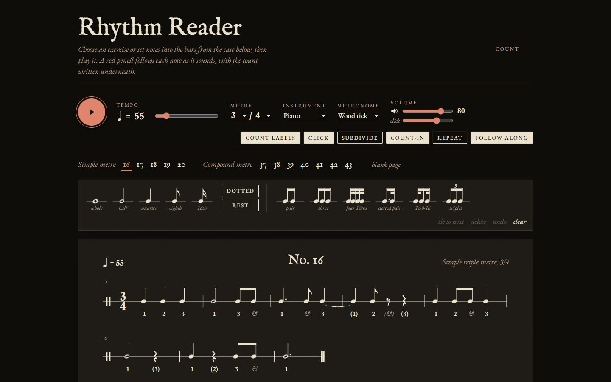

Live · single HTML file · Web Audio
Rhythm Reader
A rhythm-reading trainer styled like an engraved method book. Drag notes into bars, or type them in shorthand (q q [e e e] h.), then play them back. A red "pencil" follows each note with the count written underneath.
It covers simple and compound metres, triplets, ties, dotted values and rests. It has five instrument voices, four metronome clicks, a count-in, subdivision and repeat.